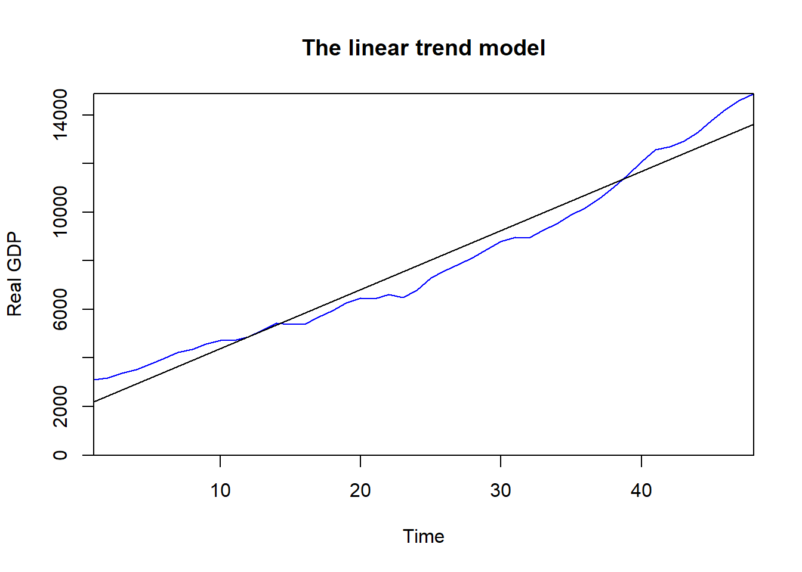
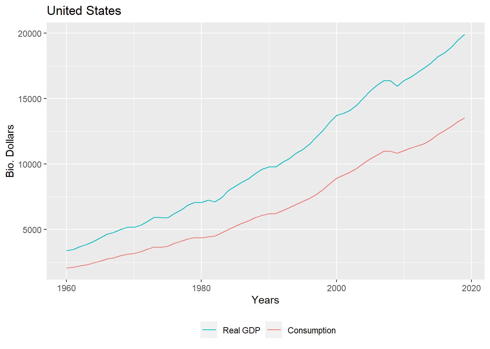

Chapter 9 Applications
9.1 Linear growth model
Time Series: Real Gross Domestic Product of USA (seasonally not adjusted) - Observations: from 1960 to 2007 - Units: Billions of dollars - Data: https://fred.stlouisfed.org/ - Source: Gujarati, D. Econometrics by Example
Data description
- Time Series: Real Gross Domestic Product of USA (seasonally not adjusted)
- Observations: from 1960 to 2007
- Units: Billions of dollars
- Data: https://fred.stlouisfed.org/series/GDPCA
Level-level model
# Loading the data
RGDP <- read.csv("GDPCA.csv", sep= ";", header = TRUE)
# Inspecting the data
head(RGDP, 5L)
## DATE TIME GDPCA
## 1 1960 1 3108.707
## 2 1961 2 3188.123
## 3 1962 3 3383.085
## 4 1963 4 3530.412
## 5 1964 5 3734.043
# The model
linear_trend <- lm(RGDP$GDPCA ~ RGDP$TIME)
RGDP <- read_delim("C:/Users/bramucci/Documents/Intro_to_quant_methods/GDPCA.csv", delim = ";",
escape_double = FALSE, trim_ws = TRUE)
# Inspecting the data
head(RGDP, 5L)
## # A tibble: 5 x 3
## DATE TIME GDPCA
## <dbl> <dbl> <dbl>
## 1 1960 1 3109.
## 2 1961 2 3188.
## 3 1962 3 3383.
## 4 1963 4 3530.
## 5 1964 5 3734.
# The model
linear_trend <- lm(RGDP$GDPCA ~ RGDP$TIME)
# Plot
plot(RGDP$TIME, RGDP$GDPCA,
type = "l",
col = "blue",
main = "The linear trend model",
xlab = "Time",
ylab = "Real GDP",
ylim = c(0, max(RGDP$GDPCA)),
xaxs = "i",
yaxs = "i")
abline(lm(RGDP$GDPCA ~ RGDP$TIME))
stargazer(linear_trend, type = "text", keep.stat = c("n", "rsq"))
##
## ========================================
## Dependent variable:
## ---------------------------
## GDPCA
## ----------------------------------------
## TIME 242.900***
## (6.697)
##
## Constant 1,953.991***
## (188.490)
##
## ----------------------------------------
## Observations 48
## R2 0.966
## ========================================
## Note: *p<0.1; **p<0.05; ***p<0.01The slope coefficient gives us absolute change in real GDP per unit of time (year). These results show that over the period 1960–2007, real GDP in the USA increased on average by about $243 billion per year.
Log-level model
We can also estimate the rate of growth of real GDP using logs. We know that:
\[RGDP_t = RGDP_{1960}*(1 + r)^t\]
Using logs we can rewrite the function above as:
\[ln(RGDP_t) = ln(RGDP_{1960}) + ln(1 + r)*t\]
Now letting \(\beta_0 = ln(RGDP_{1960})\) and \(\beta_1 = ln(1 + r)\) we can rewrite the model as:
\[ln(RGDP_t) = \beta_0 + \beta_1*t + u_t\]
RGDP$lnGDPCA <- log(RGDP$GDPCA)
log_linear_trend <- lm(RGDP$lnGDPCA ~ RGDP$TIME)
RGDP$lnGDPCA <- log(RGDP$GDPCA)
log_linear_trend <- lm(RGDP$lnGDPCA ~ RGDP$TIME)
plot(RGDP$TIME, RGDP$lnGDPCA,
type = "l",
col = "red",
main = "The log-linear trend model",
xlab = "Time",
ylab = "Log real GDP",
xaxs = "i",
yaxs = "i")
abline(lm(RGDP$lnGDPCA ~ RGDP$TIME))stargazer(log_linear_trend, type = "text", keep.stat = c("n", "rsq"))
##
## ========================================
## Dependent variable:
## ---------------------------
## lnGDPCA
## ----------------------------------------
## TIME 0.032***
## (0.0003)
##
## Constant 8.088***
## (0.009)
##
## ----------------------------------------
## Observations 48
## R2 0.995
## ========================================
## Note: *p<0.1; **p<0.05; ***p<0.01Results show that real GDP in the USA has been increasing at a rate of 3.22% per year. If we exponentiate the slope coefficient (\(e^{\beta_0}\)) we obtain approximately the value of real GDP at the starting period (1960).
exp(8.0881267)## [1] 3255.583head(RGDP, 1L)## # A tibble: 1 x 4
## DATE TIME GDPCA lnGDPCA
## <dbl> <dbl> <dbl> <dbl>
## 1 1960 1 3109. 8.04The coefficient \(\beta_2\) gives us the instantaneous rate of growth. We can also calculate the compound rate of growth \(r\).
(exp(0.0322421) - 1)*100## [1] 3.276751Quadratic regression model (level-level)
We can now consider the following polynomial (i.e. quadratic) model:
\[ RGDP_t = \beta_0 + \beta_1*t + \beta_2*t^2 + u_t \]
The fact that \(t\) and \(t^2\) are correlated does not raise the problem of collinearity. One of the assumption of the multiple linear regression model is that there is no perfect linear relationship between the regressors. This is because the two variables are not a linear function of each other but rather a quadratic function.
quadratic_trend <- lm(RGDP$GDPCA ~ RGDP$TIME + I(RGDP$TIME^2))
quadratic_trend <- lm(RGDP$GDPCA ~ RGDP$TIME + I(RGDP$TIME^2))
plot(RGDP$TIME, RGDP$GDPCA,
type = "l",
col = "black",
main = "The quadratic level-level trend model",
xlab = "Time",
ylab = "Real GDP",
xaxs = "i",
yaxs = "i")
lines(RGDP$TIME, quadratic_trend$fitted.values, col = "green")
stargazer(quadratic_trend, type = "text", keep.stat = c("n", "rsq"))
##
## ========================================
## Dependent variable:
## ---------------------------
## GDPCA
## ----------------------------------------
## TIME 72.987***
## (9.011)
##
## TIME2) 3.468***
## (0.178)
##
## Constant 3,369.931***
## (95.719)
##
## ----------------------------------------
## Observations 48
## R2 0.996
## ========================================
## Note: *p<0.1; **p<0.05; ***p<0.01How can we interpret these results? In the multiple linear regression context, we interpret the partial effect of one regressor by differentiating the function with respect to that variable. In a linear model in levels, what we usually obtain is the coefficient (one of the betas) that multiply that variable. By doing so we are treating the other variables as constants. In this example, we have to differentiate with respect to \(t\) and we cannot treat \(t^2\) as a constant.
\[ \frac{dRGDP}{dt} = \beta_1 + 2 * \beta_2 * t \]
\[ \frac{dRGDP}{dt} = 72.9873 + 2 * 3.4676 * t \]
We have obtained the rate of change in real GDP with respect to time. The rate of change in real GDP with respect to time is a positive function of time. As time increases, real GDP is increasing at an increasing rate. We can also notice that the rate of change in real GDP depends on time at which the rate of change is measured as opposed to the linear level-level model from above.
Quadratic regression model (log-level)
We can now consider the same model as before, but with the log of real GDP:
\[ ln(RGDP_t) = \beta_0 + \beta_1*t + \beta_2*t^2 + u_t \]
quadratic_log_trend <- lm(RGDP$lnGDPCA ~ RGDP$TIME + I(RGDP$TIME^2))
quadratic_log_trend <- lm(RGDP$lnGDPCA ~ RGDP$TIME + I(RGDP$TIME^2))
plot(RGDP$TIME, RGDP$lnGDPCA,
type = "l",
col = "black",
main = "The quadratic log-level trend model",
xlab = "Time",
ylab = "Log real GDP",
xaxs = "i",
yaxs = "i")
lines(RGDP$TIME, quadratic_log_trend$fitted.values, col = "purple")
stargazer(quadratic_log_trend, type = "text", keep.stat = c("n", "rsq"))
##
## ========================================
## Dependent variable:
## ---------------------------
## lnGDPCA
## ----------------------------------------
## TIME 0.036***
## (0.001)
##
## TIME2) -0.0001***
## (0.00002)
##
## Constant 8.057***
## (0.013)
##
## ----------------------------------------
## Observations 48
## R2 0.996
## ========================================
## Note: *p<0.1; **p<0.05; ***p<0.01What is the interpretation of what we have just obtained?
\[ \frac{d ln(RGDP)}{dt} = \beta_1 + 2 * \beta_2 * t\]
\[ \frac{d ln(RGDP)}{dt} = 0.036 - 2 * 0.00007736 * t\]
On the left hand side of the derivative, we have the rate of growth in real GDP. From the estimated coefficients we see that real GDP is increasing at a decreasing rate.
9.2 The consumption function
Estimation of the Keynesian consumption function
In this brief exercise we are going to estimate a Keynesian aggregate consumption function for the United States from 1960 to 2019. We will regress private consumption (at constant prices) on real GDP. The slope of the regression will be what in the economic literature is called the marginal propensity to consume (MPC for short). What is MPC? MPC is that value that tells us how much consumption will increase as income increases. Theory tells us that the MPC is a value between 0 and 1. When income increases by 1$, consumption will increase by a value less than the initial increase of 1$ but greater than 0.
From our Macroeconomics lessons we remember that the Keynesian consumption function is represented by the following equation, where \(C\) indicates the aggregate household consumption, \(Y\) the national income (both expressed in billions of constant dollars), \(c_Y\) is the MPC and \(c_{aut}\), autonomous consumption, i.e. the part of consumption that does not depend on income.
\[C = c_{aut} + c_Y Y\]
We first get the data using the rdbnomics package and then we will produce a graph of the time series from 1960 to 2019 with the ggplot2 package. Both time series are expressed in billions of 2015 dollars.
# Private final consumption expenditure at 2015 prices
df_cons <- rdb(ids = "AMECO/OCPH/USA.1.1.0.0.OCPH") %>%
select(original_period, value) %>%
rename(Year = original_period,
cons = value) %>%
filter(Year >= 1960 & Year <= 2019)
# Gross domestic product at 2015 reference levels [OVGD]
df_rGDP <- rdb(ids = "AMECO/OVGD/USA.1.1.0.0.OVGD") %>%
select(original_period, value) %>%
rename(Year = original_period,
rGDP = value) %>%
filter(Year >= 1960 & Year <= 2019)
# Joining data
df_final <- df_cons %>%
left_join(df_rGDP, by = c("Year")) %>%
mutate(ldcons = c(NA, diff(log(cons))),
ldrGDP = c(NA, diff(log(rGDP))))
# Preparing the data for the graphs
df_graph_level <- df_final %>%
pivot_longer(!Year, names_to = "Variable", values_to = "Value") %>%
filter(Variable %in% c("rGDP", "cons")) %>%
arrange(Variable)
We are now ready to perform the linear regression. We will also produce the scatter plot of the data to get the graphical intuition of the regression.
From the linear regression, we obtained the MPC. If income increases by 1$, consumption will increase by approximately 70 cents on average. Once the MPC is obtained, we can calculate the value of the Keynesian multiplier (\(m\)) as learned in Macroeconomics classes.
\[m = \frac{1}{1 - c_Y} = \frac{1}{1 - 0.7} = 3.33\] However, this regression has a number of problems from an econometric perspective.46 The two series have a tendency to grow over time and the variables might seem highly correlated to us because they both have the same tendency to increase with time. This could lead to the conclusion that there is a correlation when in fact there is not (not the case here). This problem is known as spurious regression. We need to see if the independent variable is correlated with the error term. This is certainly an undesirable behavior. The residuals must be completely random and contain no predictive power.
We can observe a clear pattern between residuals and income. Our coefficients are biased. If we were in a cross-sectional context, we would have to figure out which variable is missing from the model and where possible include it. Or it could be that the model is misspecified. To get to the point, econometricians would say that our two series follow a unit root process. The series are highly persistent over time and contain a, in our case positive, time trend.47 Wanting to simplify a lot we can say that our time series are not stationary and must be transformed before being used in a regression. A quick fix that works is to use logarithmic differences.48
We can see that the estimate in the slope has changed slightly. This time it is somewhat higher at 0.77. However, the interpretation of the model has changed. This time we estimated an elasticity. How can we calculate the MPC having estimated the elasticity of consumption with respect to income? From courses in Microeconomics we remind that elasticity is nothing more than the ratio of two percentage rates and that on the demand curve elasticity varies depending on where you measure it.49 In our case, our elasticity parameter (just called \(\epsilon_Y\) for simplicity) is given by:
\[ \epsilon_Y = \frac{\frac{\partial C}{C}}{\frac{\partial Y}{Y}} = \frac{\partial C}{\partial Y} \frac{Y}{C}\]
Rearranging the terms, we get:
\[\frac{\partial C}{\partial Y} = \epsilon_Y \frac{C}{Y} \]
The elasticity parameter is equal to 0.77 while the C/Y term that we will calculate as the average over the entire period from 1960 to 2019 is equal to 0.64. The marginal effect, the MPC, calculated on the avare over the entire period is therefore 0.4928.
How do the residuals perform this time?
There are actually a whole host of econometric issues that we have left out but that need to be properly addressed when estimating a model. Is there serial correlation in the residuals and if so what is the consequence? Is there heteroschedasticity in the residuals and if so what problems could it cause? There are tests appropriately developed by statisticians to identify these problems and solutions to fix them. All of these things will be the subject of the course in the following semester.
The value of \(R^2\) almost equal to one must immediately raise doubts.↩︎
The two concepts, trending behaviour and persistent behaviour, should not be confused. Please refer to the Wooldridge textbook (Chapter 11).↩︎
Differencing will removes the linear trend.↩︎
For a review of the elasticity concept in economics, see here.↩︎